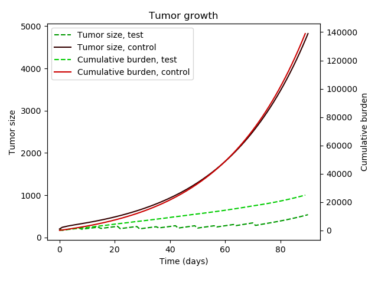

La période de débuggage s'est terminée il y a environ une semaine; le modèle est maintenant cohérent et produit les résultats escomptés. À titre d'exemple,
on présente le résultat de deux simulations:

Les courbes à trait plein modélisent la croissance tumorale d'un patient non-traité, tandis que les courbes à trait pointillé modélisent plutôt la tumeur
d'un patient suivant une immunothérapie quotidienne et une virothérapie hebdomadaire. On remarque une décroissance de la taille de la tumeur qui coïncide
avec l'administration de la virothérapie. Sous certain conditions, la taille de la tumeur peut être réduite suffisament pour effectivement modéliser une
guérison.
Le cumulative burden représente le fardeau cumulatif de la tumeur sur le
patient et est obtenue en intégrant la taille de la tumeur dans le temps. Un terme additionnel sera bientôt ajouté pour incorporer le fardeau du
traitement.
Depuis quelques jours, les efforts sont redirigés vers l'implémentation du protocol AlphaZero. On introduit un prototype simple pour le réseau de
neurones employé par l'algorithme.
Le réseau accepte deux entrées: les caractéristiques propres au patient et son état courant en terme de solution à notre système d'EDO. Ces entrées sont
concaténées et assimilées aux tronc du modèle, consistant de couches denses, de normalisations et d'activations non linéaires. Finalement, le
tronc donne lieu à deux têtes. Similairement à AlphaZero, elles se partagent les rôles de policy head et de value head. La sortie de la
policy head est une distribution de probabilités sur les coups légals, tandis que la sortie de la value head est un nombre réel et sert à
qualifier l'état courant du patient. L'heuristic précise utilisée pour l'implémentation du value head est le prochain point important à considérer.